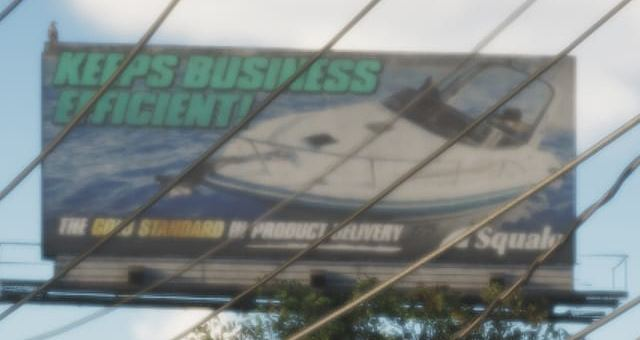
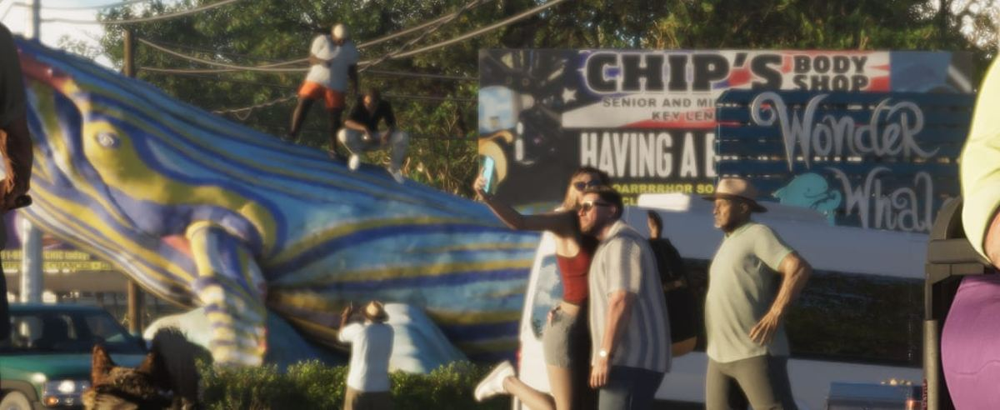
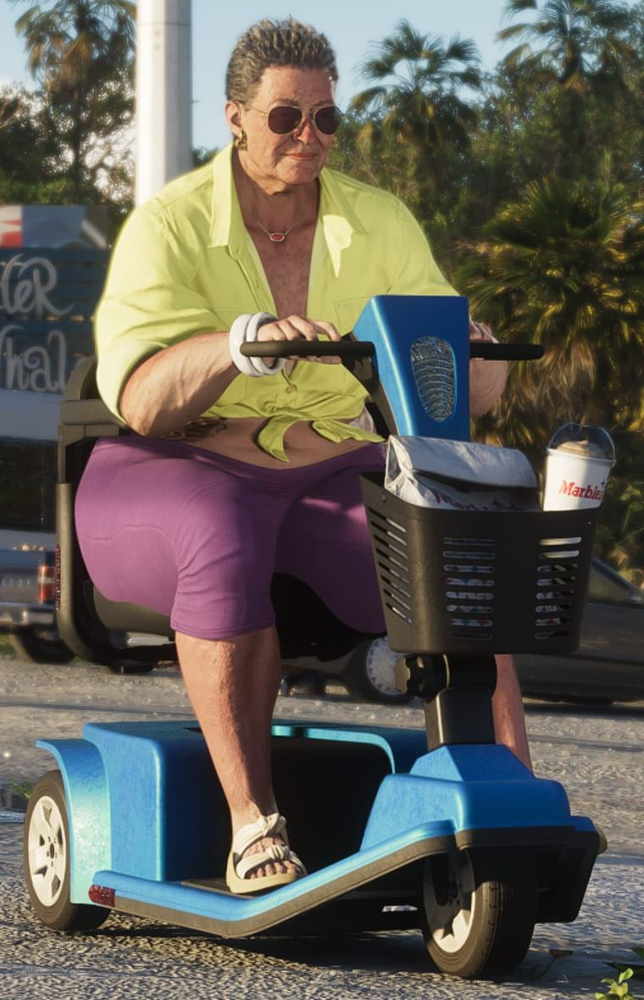
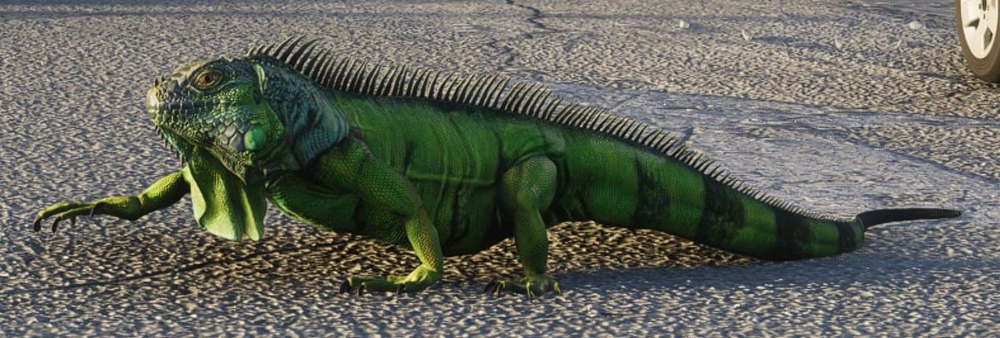
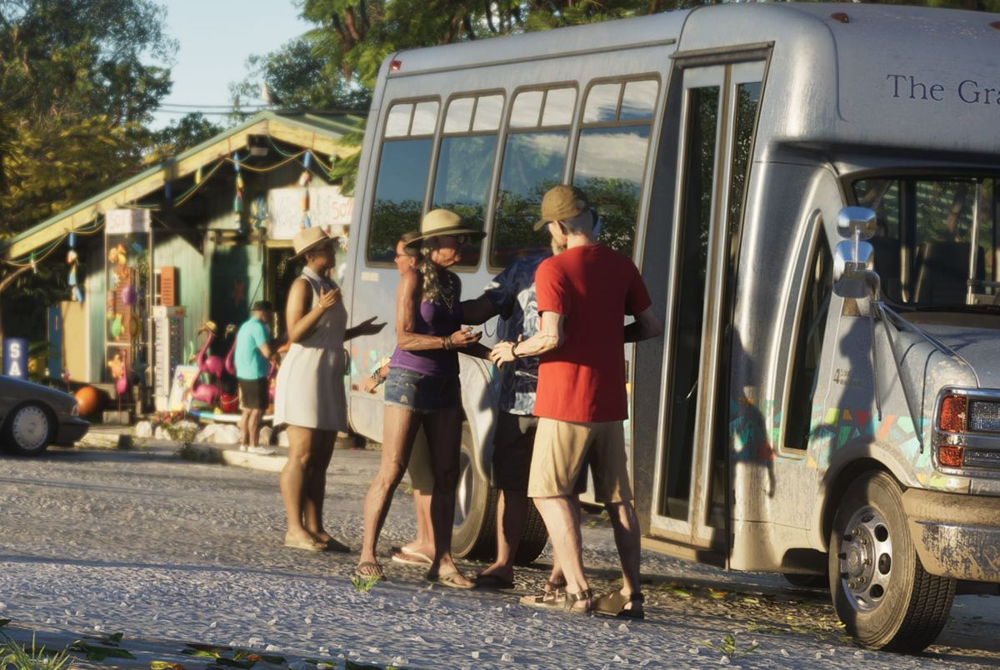
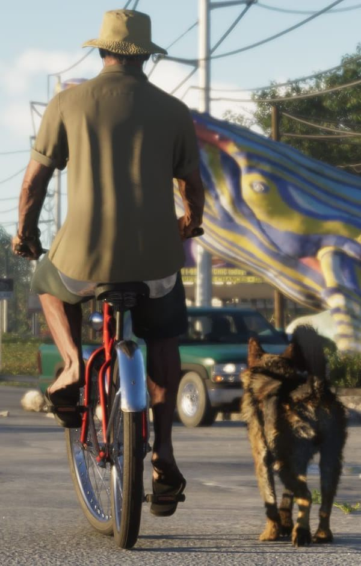

Разбор кадра: улица в Leonida Keys
Обновлено:

- Официальный кадр Rockstar из региона Leonida Keys.
- Разделили кадр на 6 зон и увеличили каждую.
- Главное: живой туристический мир, юмор и животные.
Кадр целиком
Нажмите на номер, чтобы перейти к увеличенному фрагменту.
6 деталей

1 Рекламный щит
Над дорогой — билборд с рекламой катера и слоганом «Keeps business efficient». Реклама лодок у дороги — точная деталь для островов, где лодка нужна почти каждому.

2 Кит и вывески
Огромная раскрашенная скульптура кита и вывеска «Wonder Whale» — классическая придорожная достопримечательность. Рядом — щит автомастерской «Chip’s Body Shop».

3 Героиня кадра
Главный герой снимка — пожилая женщина на электроскутере, спокойно едущая посреди дороги. В корзине — покупки и стакан с напитком. Такие будничные сцены — фирменный юмор трейлеров GTA 6.

4 Игуана
На асфальте — зелёная игуана. На юге Флориды игуаны действительно встречаются повсюду. В GTA 6 животных можно изучать — Новые механики GTA 6: что изменилось.

5 Автобус и туристы
Справа — маршрутный автобус, группа туристов в шляпах и лавка сувениров с яркими надувными игрушками. Кис живут туризмом, и кадр это показывает.

6 Велосипедист и собака
Слева — мужчина в панаме на велосипеде и собака, идущая рядом по дороге. Прохожие заняты своими делами — мир выглядит живым даже без главных героев.
Что мы узнали
- Leonida Keys — туристический регион: сувениры, автобусы, придорожные аттракционы.
- Мир наполнен животными — от собак до игуан.
- Rockstar продолжает традицию юмора через бытовые сцены.
- Много рекламы и вывесок — мир продуман до мелочей.
Больше о регионе — Карта GTA 6: штат Леонида и все регионы.
Источники: Rockstar Games — официальный скриншот GTA VI.